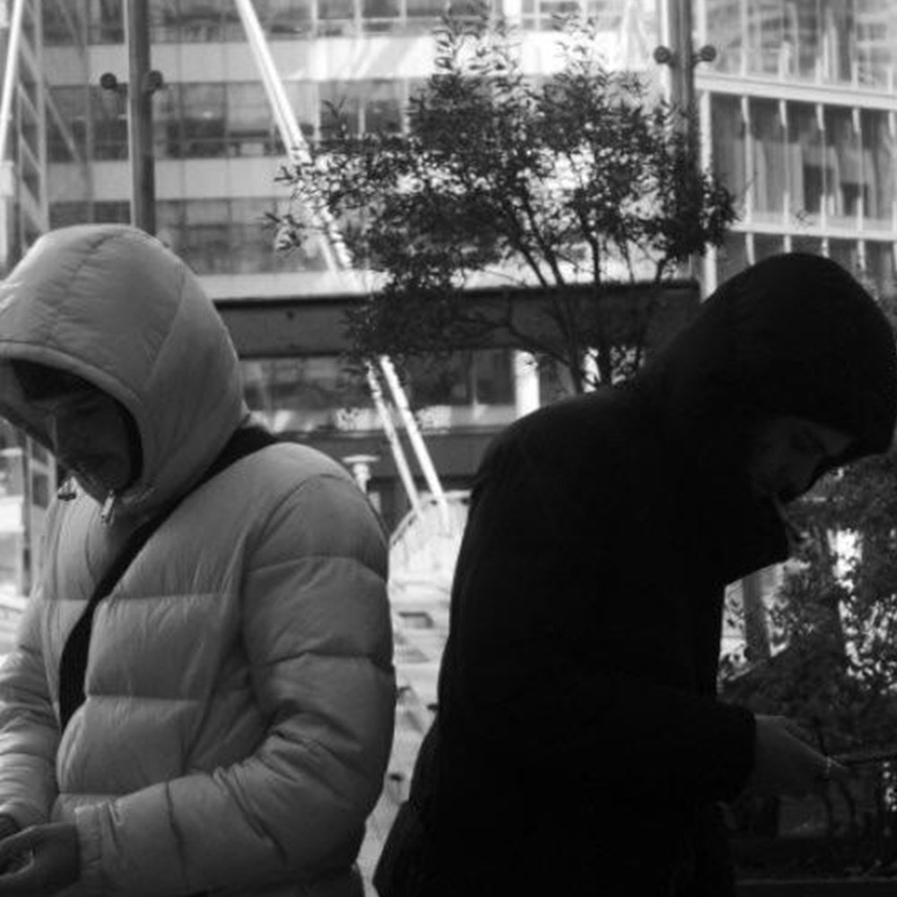
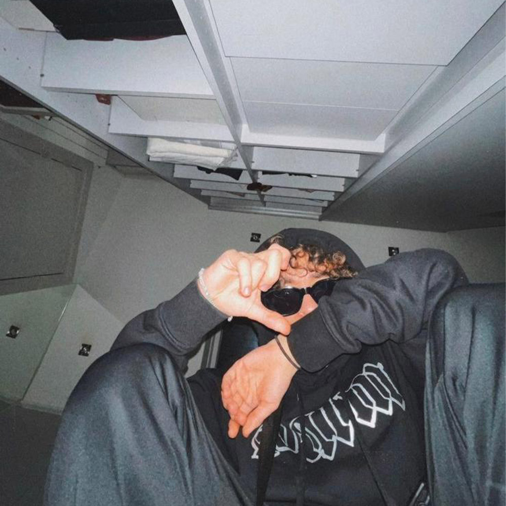
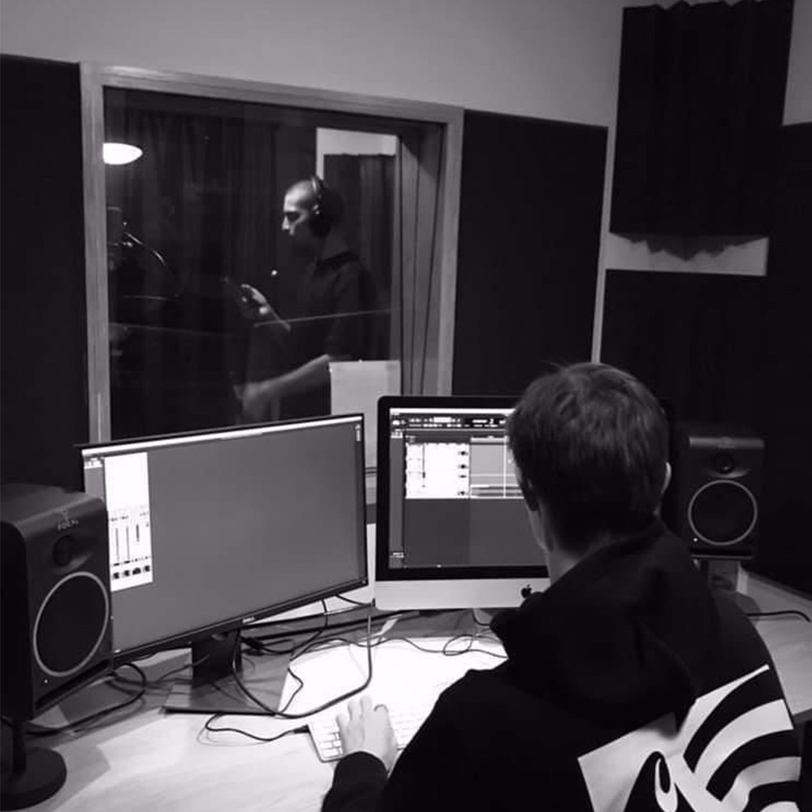

Nos pépites
-
OPZ
Voir la video
Opz est un duo de deux rappeurs Dx et Pxb. Ami depuis le collège, ils décident de se lancer dans le rap il y a 3 ans. Avec leurs textes basés sur la santé mentale et les moments de la vie, il propose un rap fort de sens. Même si ils écrivent chacun de leur côté dans leur son, leurs voix se combinent parfaitement. Entre kickage et moment plus calme, ils veulent toucher leur public, qu’il s’identifie à leurs histoires respectives. Dans cette vidéo, on les a retrouvé à Bayeux en Normandie pour le tournage de leur clip « Chemin », l’un des prochains titres de leur Ep.
-
Meya
Voir la video
Lancé depuis son plus jeune âge dans la musique, Meya de son vrai nom Pablo prépare un projet ambitieux qui nous a interpellé pour sa singularité. Originaire de Montreuil, le jeune rappeur, dévoile ses ambitions et ses envies dans le monde du rap. Pour nous, cet artiste peu connu est une pépite qui ne mérite que d’être découverte. Travailleur et perfectionniste, sa vision de la musique est un réel coup de fraîcheur dans la scène actuelle. Ses sons qui jouent sur la force des mélodies adoucie ces mots et rendent son rap audacieux et inventif.
-
Thomas Meunier
Voir la video
Passionné de rap et de musique en général, Thomas a choisi sa voie. Il s'est lancé depuis peu dans l'univers du beatmakina. De nature réservée, Thomas laisse parler sa créativité lors de la conception d'une prod. Nous sommes donc partis à sa rencontre pour essayé d'en savoir plus sa personnalité, sa conception de la musique et surtout sa technique de réalisation. Pourquoi selon nous il sera un nom incontournable de la musique urbaine dans quelques années ? Comment se démarque-t-il des autres et quelles sont ses ambitions?